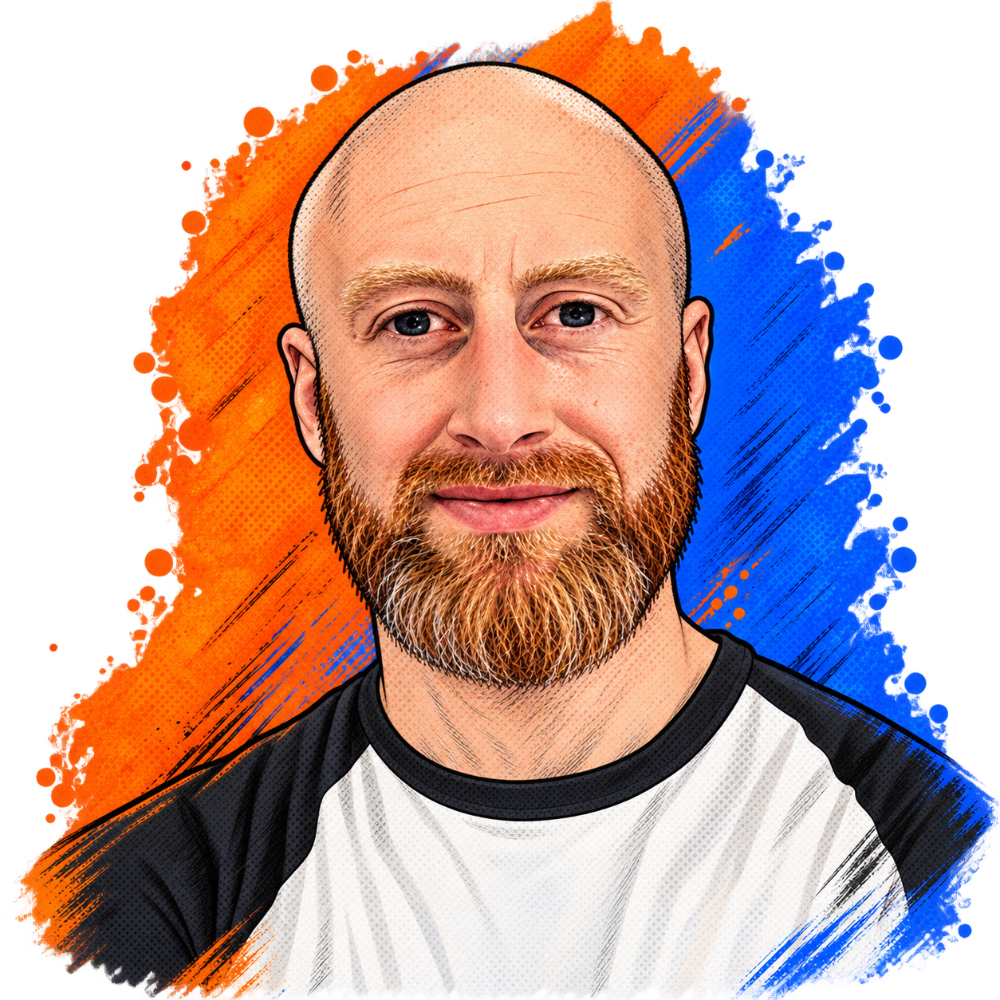
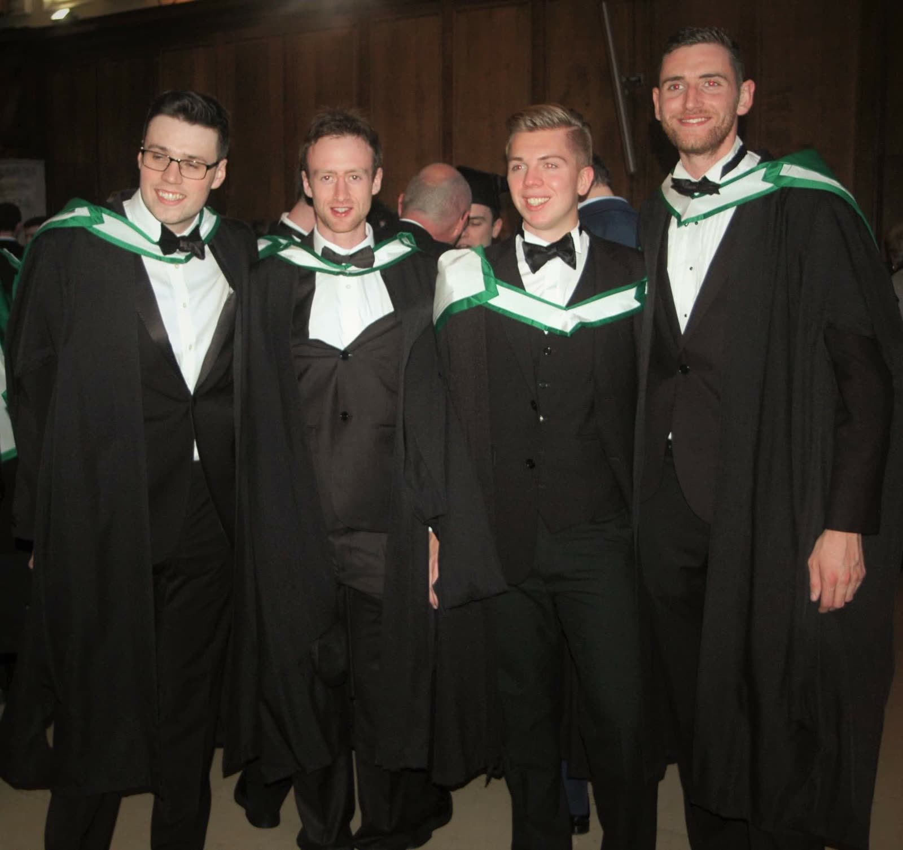
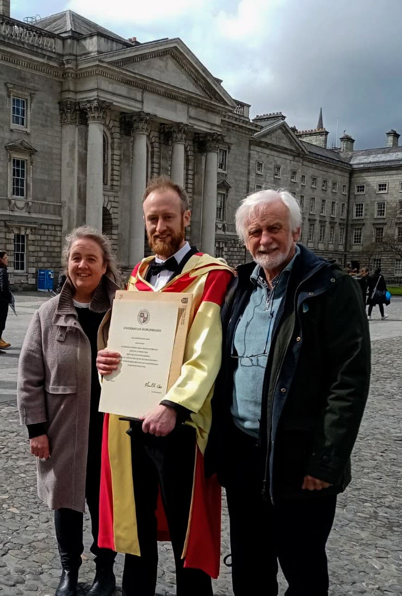

I'm Kieran Fraser, a Staff Machine Learning Engineer based in Wicklow, Ireland. I currently work on onboarding and early-lifecycle fraud detection at PayPal. Before that, I built open-source tools for testing the security and reliability of AI systems at IBM Research.
My path into industry began with a Master's in Computer Engineering, then a PhD at Trinity College Dublin's ADAPT Centre, where I studied how push notifications could become more transparent and empathetic, and then tried to turn that research into a product through EmPushy.
I grew up in Cork and now live in Wicklow with my partner, Ana. Our lives connect Ireland with her home in Alcalá de Guadaíra, near Seville. Outside work, I photograph places, experiment with spatial media, train and make things — currently including a hundred small pottery pieces for our wedding.

it out


Master's graduation, 2016


PhD graduation with Barry and Therese, 2021
BAI Computer Engineering and a BA in Mathematics — second class honours, first division.
the long way into computersMAI Computer Engineering, graduated with Distinction.
good practice for the PhDETHOS Push: research into transparent, context-aware and empathetic push notifications.
four years, one big questionEnterprise Ireland-backed attempt to turn that research into a product. Covered by SiliconRepublic, ADAPT and an Appen case study.
turns out startups are hardTrustworthy AI, adversarial robustness and generative-AI security. Contributed to HEART, ARES and ART.
breaking things, carefullyStaff Machine Learning Engineer, onboarding and early-lifecycle fraud detection. Two patent applications filed; started a small patent group in the Dublin office.
still breaking things, more carefully- At work
- Onboarding & early-lifecycle fraud detection at PayPal.
- In the lab
- Notification intelligence and digital twins.
- At home
- Pottery wedding gifts with Ana — Cork and Alcalá slips.
- In motion
- Rebuilding CrossFit, playing padel, learning Wicklow.
Patents & service
Press & mentions
the receipts, in no particular order
A few years later, a PhD somehow turned into a pitch deck.
It started with a hackathon win. Peaked early, worried everyone.
...and people just kept writing about it.
Get in touch
The best reasons to get in touch are an interesting technical problem, a thoughtful collaboration, research with somewhere to go — or something involving cameras, clay or reconstructed rooms.